1903–2000
Gertrud Arndt
Fotografa e designer Bauhaus, nota per autoritratti sperimentali.
Apri la schedaNel Novecento e nella contemporaneità le artiste trasformarono radicalmente pittura, fotografia, tessitura, performance e installazione.
1903–2000
Fotografa e designer Bauhaus, nota per autoritratti sperimentali.
Apri la scheda

1908–1984
Pittrice dell’espressionismo astratto, protagonista della scuola di New York.
Apri la scheda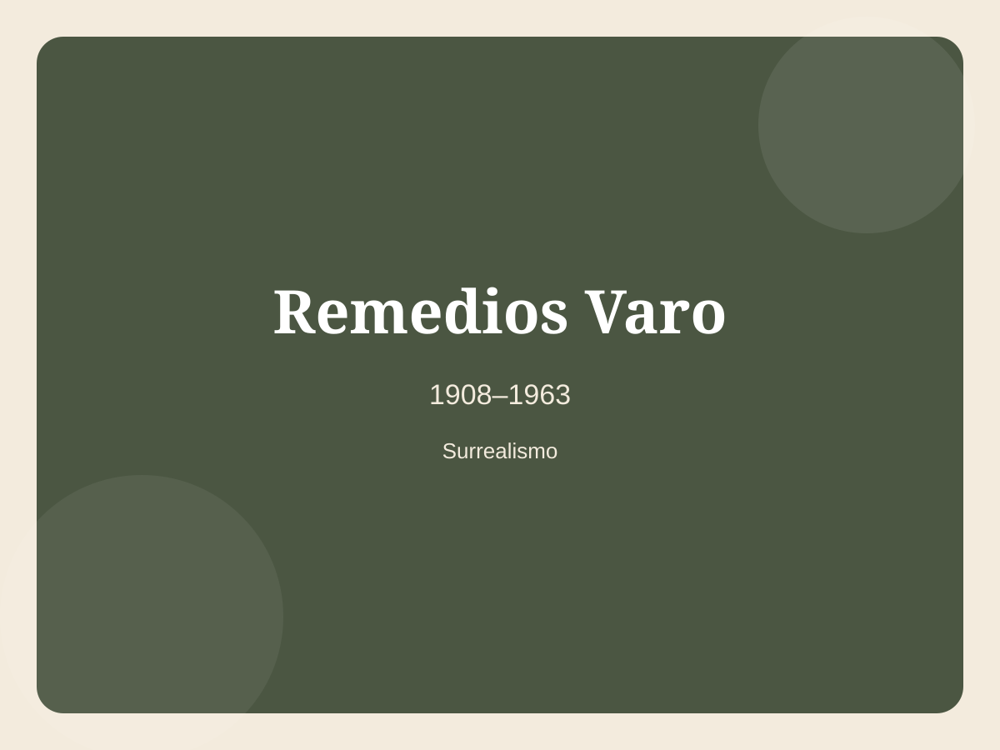
1908–1963
Pittrice surrealista ispano-messicana, autrice di mondi alchemici e visionari.
Apri la scheda
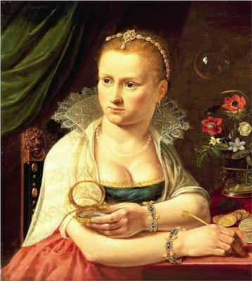

1913–1985
Artista surrealista svizzera famosa per oggetti poetici e stranianti.
Apri la scheda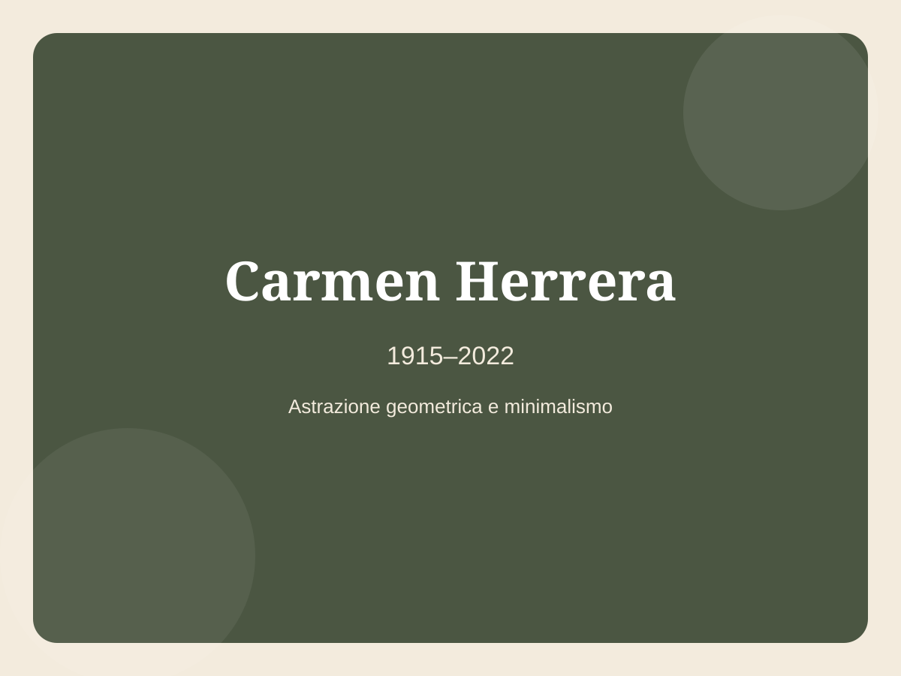
1915–2022
Pittrice cubano-statunitense dell’astrazione geometrica, riconosciuta pienamente in tarda età.
Apri la scheda1917–2011
Pittrice e scrittrice surrealista dal linguaggio visionario.
Apri la scheda
1929
Artista giapponese contemporanea famosa per pois e installazioni immersive.
Apri la scheda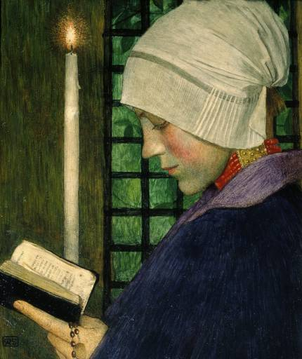
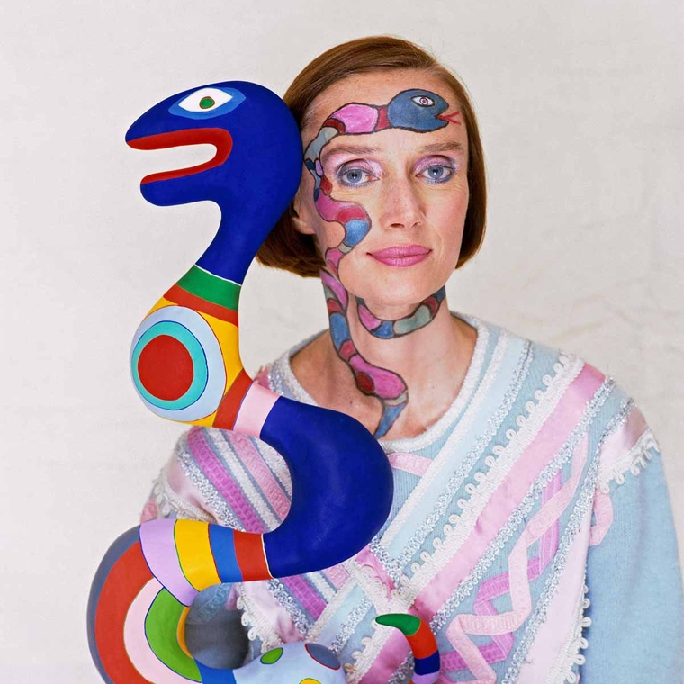
1930–2002
Artista franco-americana nota per le coloratissime Nanas.
Apri la scheda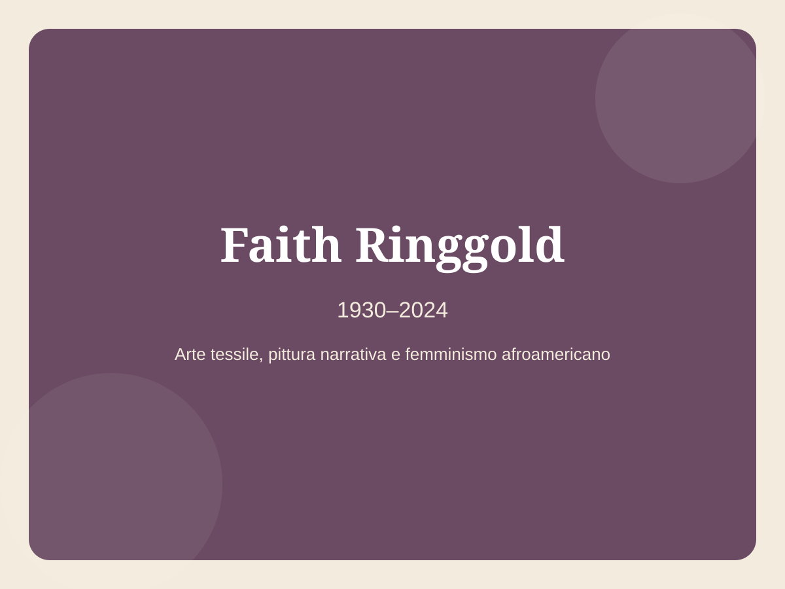
1930–2024
Artista afroamericana celebre per gli story quilts, tra pittura, tessuto e narrazione.
Apri la scheda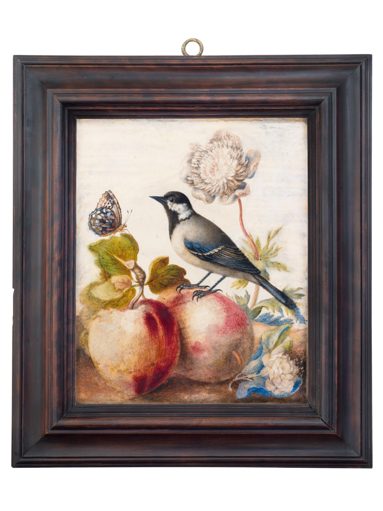
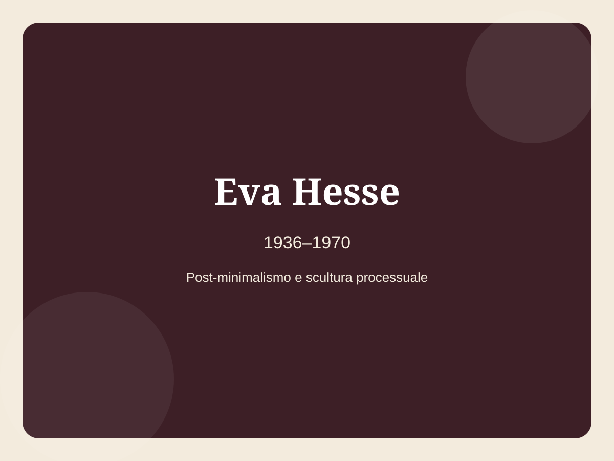
1936–1970
Scultrice post-minimalista, innovatrice nell’uso di lattice, fibra di vetro e materiali industriali.
Apri la scheda


1944–2024
Artista tedesca di installazioni, macchine poetiche e performance.
Apri la scheda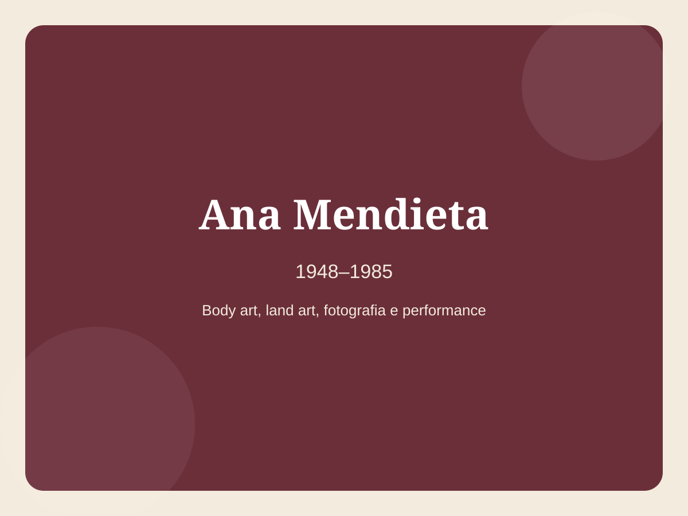
1948–1985
Artista cubano-statunitense che unì corpo, paesaggio, memoria ed esilio.
Apri la scheda

1954
Fotografa e artista concettuale, celebre per identità messe in scena.
Apri la scheda1958–1981
Fotografa americana nota per immagini intime e sperimentali.
Apri la scheda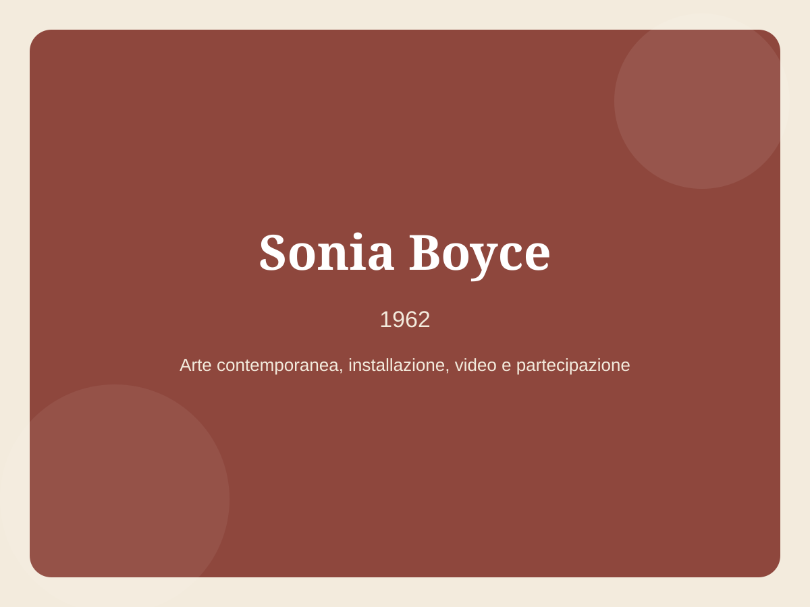
1962
Artista britannica che esplora identità, voce, collaborazione e rappresentazione nera.
Apri la scheda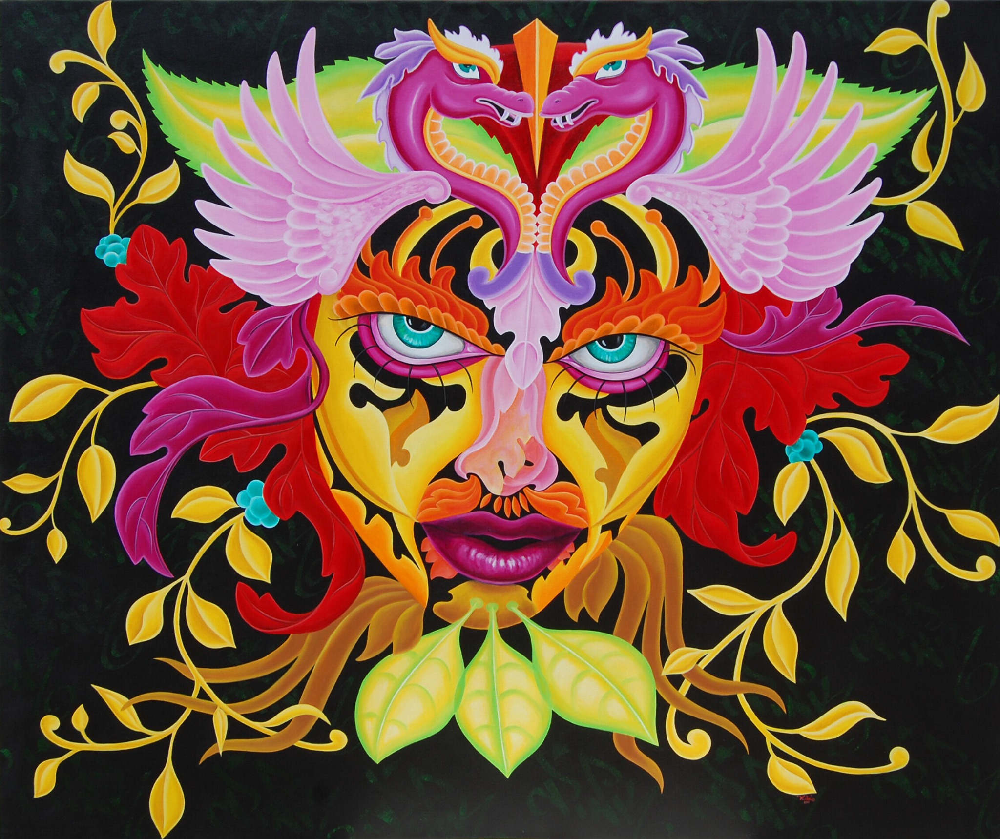

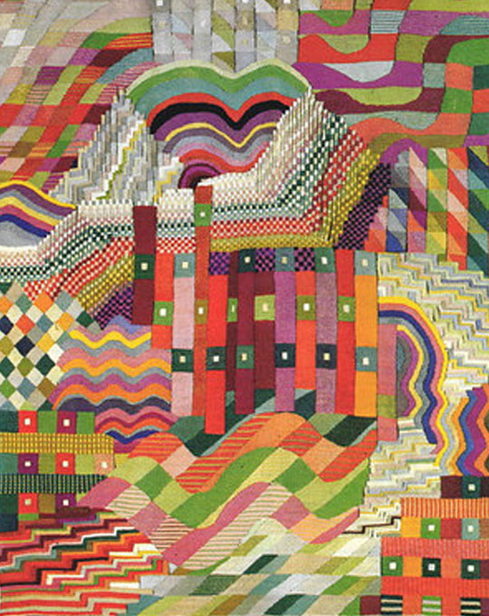
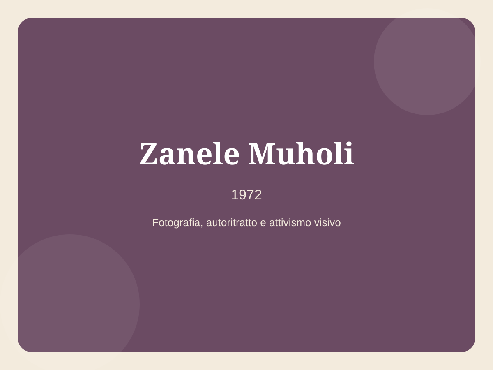
1972
Fotografa e attivista visiva sudafricana, impegnata nella rappresentazione delle comunità LGBTQIA+.
Apri la scheda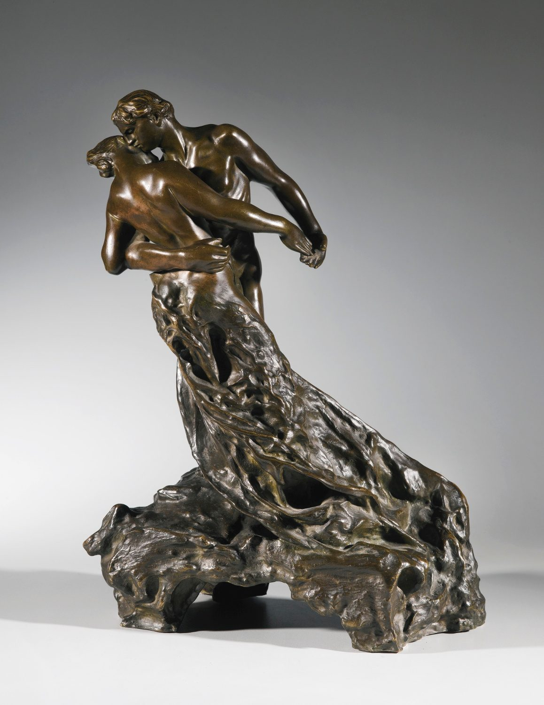